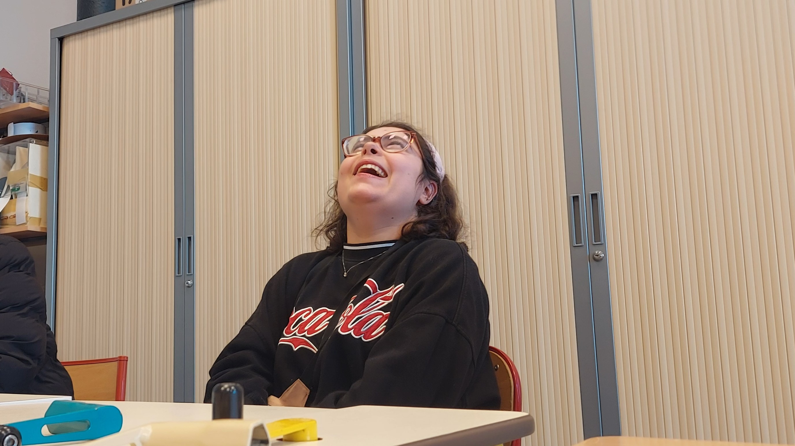

Problématique
« Memo, l’assistant vocal inclusif universel »
La ville du futur
Aujourd’hui, la ville du futur est souvent imaginée comme une ville ultra connectée, remplie de technologies et d’informations accessibles en permanence. Nous vivons dans un environnement où tout évolue rapidement : déplacements, notifications, rendez-vous, transports, communication.
Cependant, pour notre équipe, la ville du futur ne doit pas seulement être innovante. Elle doit également être inclusive et pensée pour tous. Une ville intelligente ne se limite pas à ses infrastructures ou à ses systèmes connectés : elle doit aussi permettre à chaque personne, quelles que soient ses difficultés, de vivre de manière plus autonome et plus indépendante par rapport à ces infrastructures.
C’est dans cette réflexion qu’est né notre projet Memo.
Voici Elia
Lors de notre rencontre avec Elia, nous avons rapidement compris qu’il existait un réel besoin d’inclusivité dans cette ville du futur.
Elia a 19 ans et est atteinte d’hémiplégie. Cette pathologie provoque une paralysie partielle ou complète d’une partie du corps et peut avoir plusieurs origines : AVC, malformations cérébrales ou encore hémorragies cérébrales.

Elia présente également plusieurs difficultés associées :
- Absence de repérage dans le temps
- Déficiences visuelles importantes
- Retard intellectuel
- Difficultés motrices et de dextérité
- Incapacité de lecture
Au quotidien, ces difficultés compliquent fortement son autonomie. Les tâches simples comme gérer son emploi du temps, savoir quand partir, prendre un traitement ou respecter une routine deviennent rapidement complexes sans aide extérieure.
Lors de notre entrevue avec elle, nous avons observé qu’Elia dépendait énormément de ses proches pour se repérer dans le temps et organiser ses activités quotidiennes.
Comment permettre à une personne atteinte de déficiences visuelles et n’ayant pas la notion du temps de gagner en autonomie ?
Analyse des besoins
Après plusieurs échanges avec Elia, ses proches et son encadrement médical, nous avons identifié plusieurs besoins essentiels :
- Recevoir des rappels simples et compréhensibles
- Limiter l’utilisation du texte
- Utiliser des interactions vocales claires
- Disposer d’une interface avec de forts contrastes visuels
- Manipuler un objet robuste et simple à utiliser
- Être accompagné dans les tâches quotidiennes importantes
L’objectif n’était donc pas seulement de créer un objet connecté, mais de concevoir une solution réellement adaptée à ses capacités et à son quotidien.
Notre solution : Memo
Pour répondre à cette problématique, nous avons créé Memo : un assistant vocal inclusif conçu pour accompagner les personnes ayant des troubles cognitifs, moteurs ou visuels.
Memo permet de programmer des rappels vocaux simples pour aider l’utilisateur à gérer ses routines, ses rendez-vous ou ses tâches importantes.
La ville du futur doit être capable de s’adapter à tous ses habitants. Memo représente notre contribution à cette vision.
Découvrir notre solution